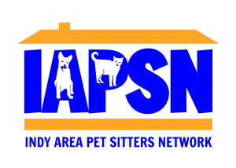

Welcome to the home page of the Indianapolis Area Pet Sitters Network. We are a group of professional pet sitters serving Indianapolis and surrounding counties.
Setting the Standard for Professional Pet Care Services
Hire a professional, insured pet sitter! While away on your trip or having long days at the office, you’ll know that your pets are being well cared for, safe and happy in their own environment if they are served by one of Indianapolis’ most trusted professional pet care providers, an IAPSN member!
For your peace of mind, all members are required to be insured. In addition, companies who use added care providers are required to be bonded.
Member Companies provide the following services:
- Vacation or Business Travel visits including feeding and treats
- Dog Walking and Mid-Day breaks
- Sleep-In Overnight Visits
- Home Boarding
- Pet Transportation
- Basic Home Care and Security Checks
- Medication Administration
Services offered vary by company. Check with the company you hire to be sure they offer the services you require.
{kind=link}